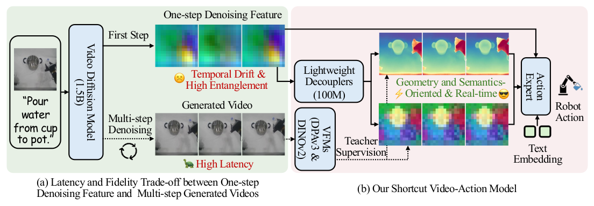
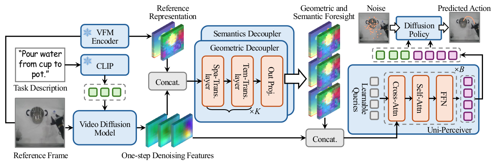
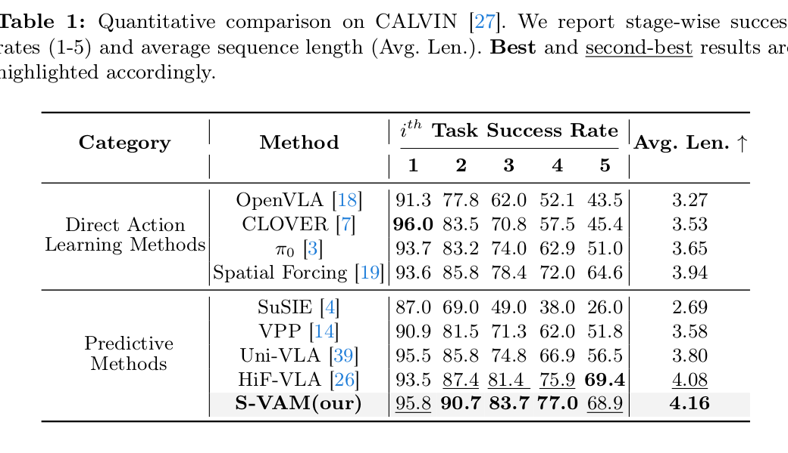
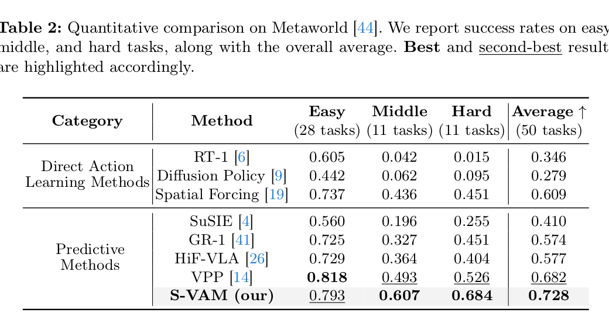
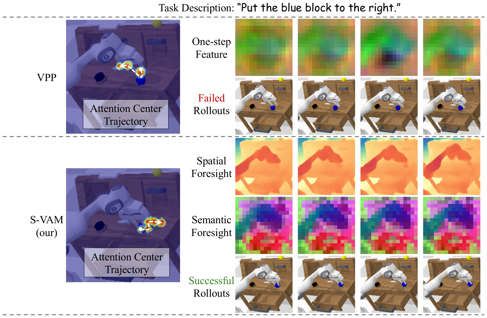
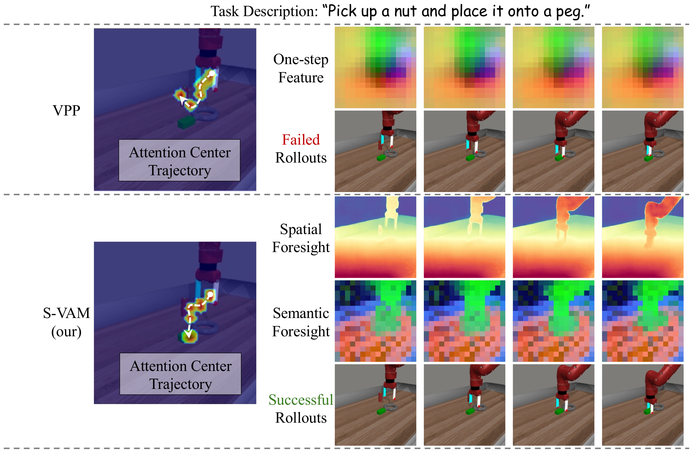
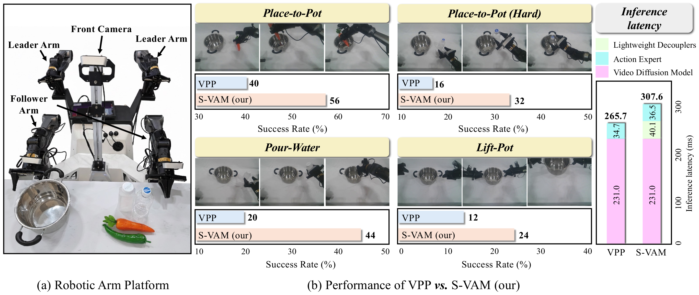

Abstract
Video action models (VAMs) have emerged as a promising paradigm for robot learning, owing to their powerful visual foresight for complex manipulation tasks. However, current VAMs, typically relying on either slow multi-step video generation or noisy one-step feature extraction, cannot simultaneously guarantee real-time inference and high-fidelity foresight. To address this limitation, we propose S-VAM, a shortcut video-action model that foresees coherent geometric and semantic representations via a single forward pass. Serving as a stable blueprint, these foreseen representations significantly simplify action prediction. To enable this efficient shortcut, we introduce a self-distillation strategy that condenses structured generative priors of multi-step denoising into one-step inference. Specifically, vision foundation model representations extracted from the diffusion model's own multi-step generated videos provide teacher targets, while lightweight decouplers learn to directly map noisy one-step features to these targets. Extensive experiments in simulation and the real world demonstrate that S-VAM outperforms state-of-the-art methods, enabling efficient and precise manipulation in complex environments.
Introduction
As illustrated in the teaser figure, current VAMs mainly fall into two paradigms. The first relies on generating future videos to guide control, but the latency of multi-step denoising makes it unsuitable for high-frequency closed-loop control. The second paradigm, exemplified by one-step feature extraction, is efficient but yields noisy and highly entangled representations with poor temporal coherence. These representations lack the geometry-oriented cues needed to compensate for monocular depth ambiguity and the semantic distinctiveness required to distinguish task-relevant objects from irrelevant elements. To overcome this dilemma between inference latency and foresight fidelity, S-VAM foresees coherent geometric and semantic representations via a single forward pass.

Method
As shown in the method figure, S-VAM establishes a shortcut that bypasses the prohibitive latency of iterative video generation. We extract one-step denoising features, use specialized decouplers to disentangle them into geometric and semantic foresight, and supervise these branches with DPAv3 and DINOv2 representations extracted from the model's own multi-step generated videos. The resulting foresight is then aggregated with the original diffusion features by a Uni-Perceiver, providing a holistic conditioning context for the downstream diffusion policy to predict precise robot action.

Experiments
Simulation Benchmarks


Qualitative Comparison


Real-World Experiments

BibTeX